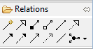
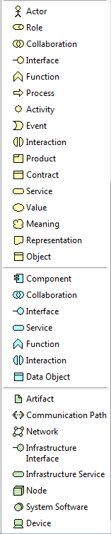

Note and Group Creation Tools
Apart from the Selection Tools there are other tools available on the Palette used to create new ArchiMate elements, Notes, Groups and Relations between elements (connections). To add a new element or to the canvas select one and drag it onto or click onto the canvas.
There are ten types of ArchiMate relation and three types of junction elements (the latter are not strictly connections but they are grouped with the relations on the Palette).

The Relations Creation Tools in the Palette
The first tool is the Magic Connector, used for drawing connections. This is followed by creation tools for Specialisation, Composition, Aggregation, Assignment, Realisation, Triggering, Flow, Used By, Access and Association relations.
Adding a note annotation or a Group Container to the View:
Note and Group Creation Tools
These are divided into 3 "drawers", "Business", Application and "Technology".

The Creation tools